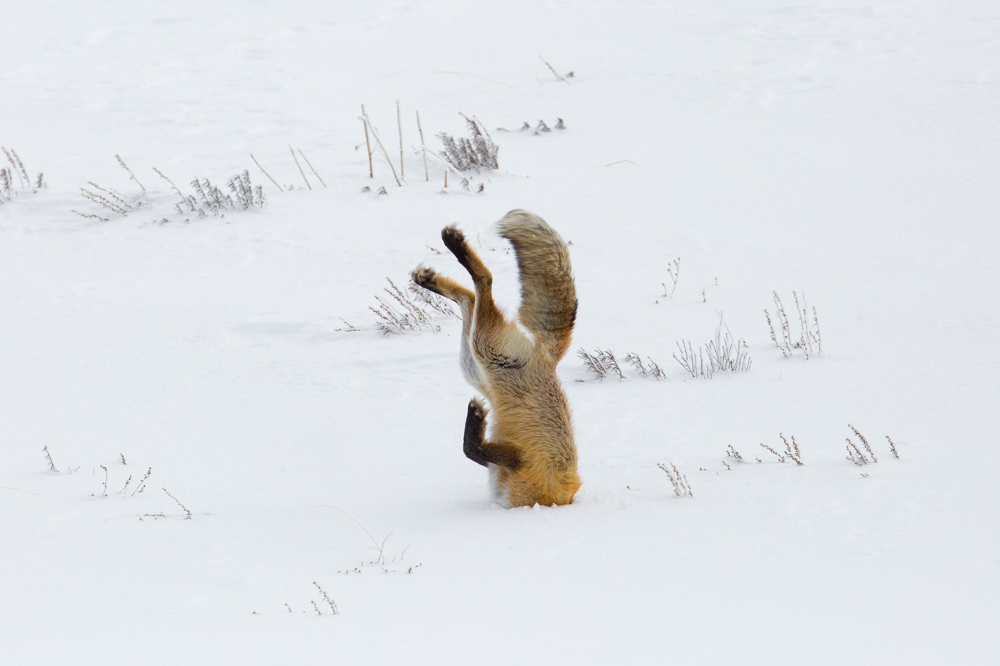
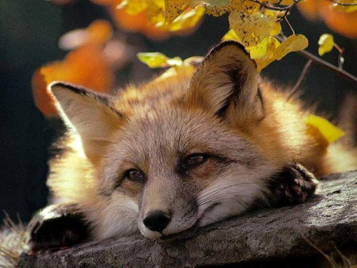
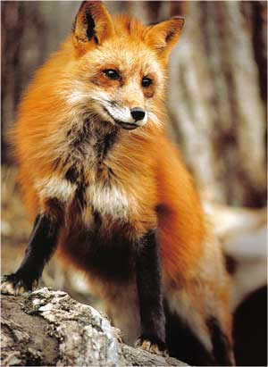

Primele mamifere asemanatoare vulpilor au aparut
acum 6-10 milioane de ani. Specia din emisfera
nordica si anume vulpea rosie, este cea mai
cunoscuta specie. Sunt o multime de specii
raspandite pe Pamant, pentru ca sunt
mamifere adaptabile.


